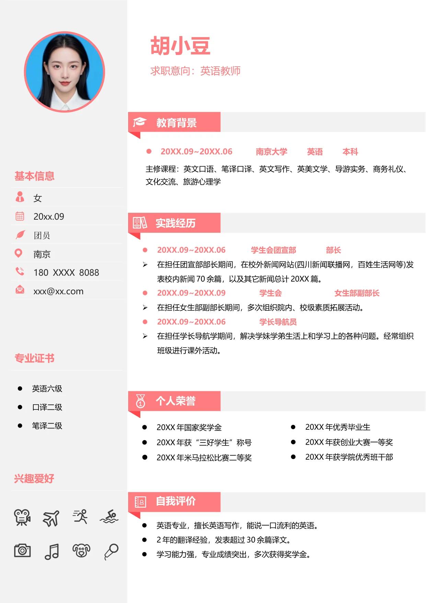

女
20xx.09
团员
南京
180 XXXX 8088
xxx@xx.com
•
英语六级
•
口译二级
•
笔译二级
胡小豆
求职意向：英语教师
•
20XX.09~20XX.06 南京大学 英语 本科
主修课程：英文口语、笔译口译、英文写作、英美文学、导游实务、商务礼仪、
文化交流、旅游心理学
•
20XX.09~20XX.06
学生会团宣部
部长
•
在担任团宣部部长期间，在校外新闻网站(四川新闻联播网，百姓生活网等)发
表校内新闻70 余篇，以及其它新闻总计20XX 篇。
•
20XX.09~20XX.09 学生会 女生部副部长
•
在担任女生部副部长期间，多次组织院内、校级素质拓展活动。
•
20XX.09~20XX.06 学长导航员
•
在担任学长导航学期间，解决学妹学弟生活上和学习上的各种问题。经常组织
班级进行课外活动。
•
英语专业，擅长英语写作，能说一口流利的英语。
•
2 年的翻译经验，发表超过30 余篇译文。
•
学习能力强，专业成绩突出，多次获得奖学金。
自我评价
•
20XX 年国家奖学金
•
20XX 年获“三好学生”称号
•
20XX 年米马拉松比赛二等奖
荣誉奖励
•
20XX 年优秀毕业生
•
20XX 年获创业大赛一等奖
•
20XX 年获学院优秀班干部
基本信息
专业证书
教育背景
实践经历
个人荣誉
自我评价
兴趣爱好